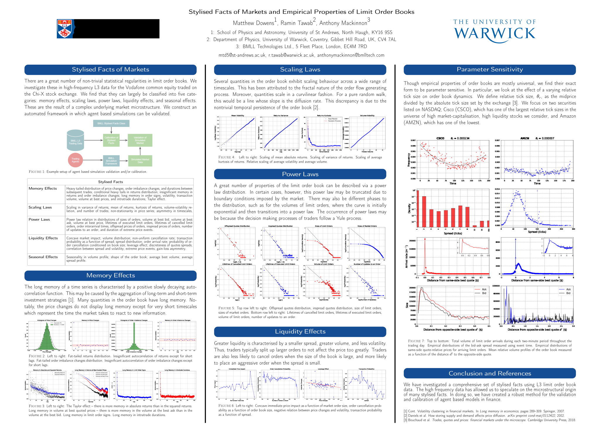
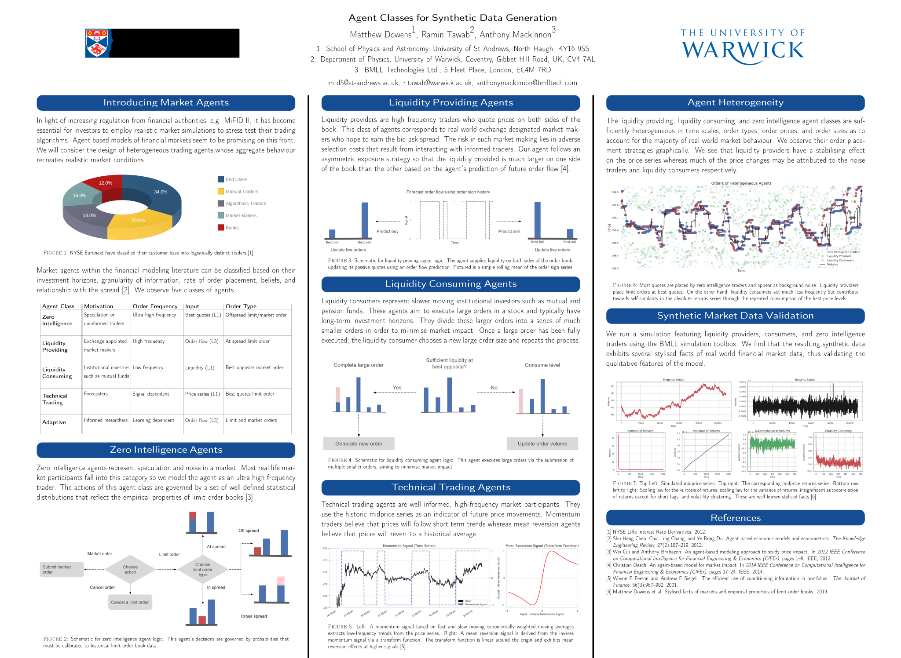

Interning at BMLL Technologies
My machine learning internship at BMLL Technologies gave me a look into the world of financial microstructure and agent based modelling. We were tasked with implementing agent based models of markets. This turned out to be difficult, so we took the initiative to research empirical properties of limit order books which could be used to verify whether a financial simulation is producing realistic order flow. I was able to classify these stylised facts into various kinds -- largely to do with their underlying processes. Eventually, I turned this research into an automated python library which acts as a Jupyter notebook API on the BMLL web platform.
Agent based models of finance are still in their infancy. The literature on the subject is far from rigorous and our above attempts are the first step towards accomplishing this. We followed up with a review of agent classes. Surprisingly, our agent based model reproduced various non-trivial stylised facts of markets.
